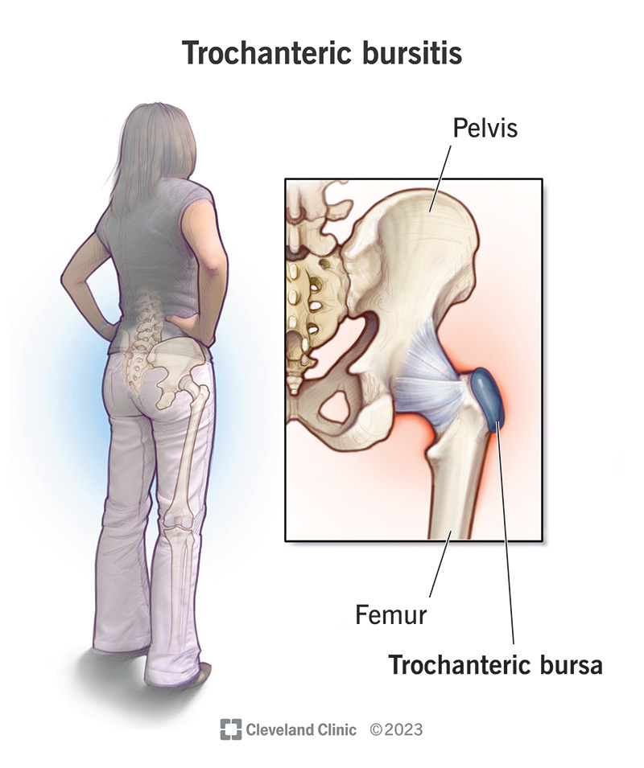

"Trochanteric bursitis, unspecified hip" refers to inflammation of the bursa located near the greater trochanter of the femur (hip bone), causing pain on the outside of the hip, but without specifying which hip is affected; meaning the pain could be felt on either the left or right hip.
Key points about trochanteric bursitis, unspecified hip:
Pain location: Pain is typically felt on the outer side of the hip, sometimes radiating down the upper thigh.
Causes: Overuse activities, repetitive motions, poor posture, injuries to the hip, or sudden increases in activity level.
Symptoms: Sharp or aching pain on the side of the hip, especially when getting up from a chair, lying on the affected side, or walking for long periods.
Diagnosis: Physical examination by a doctor, including palpation of the affected area, and sometimes imaging tests like X-rays to rule out other conditions.
